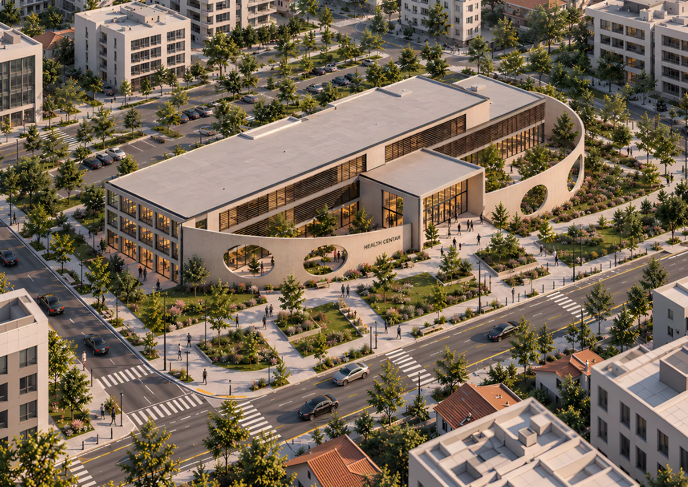
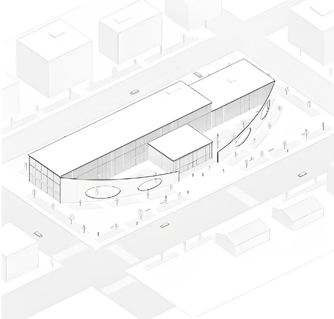
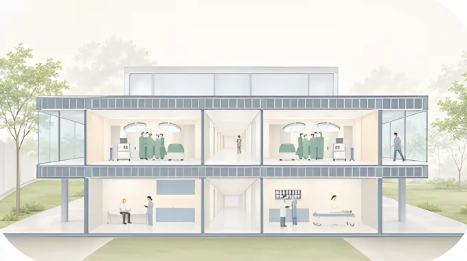
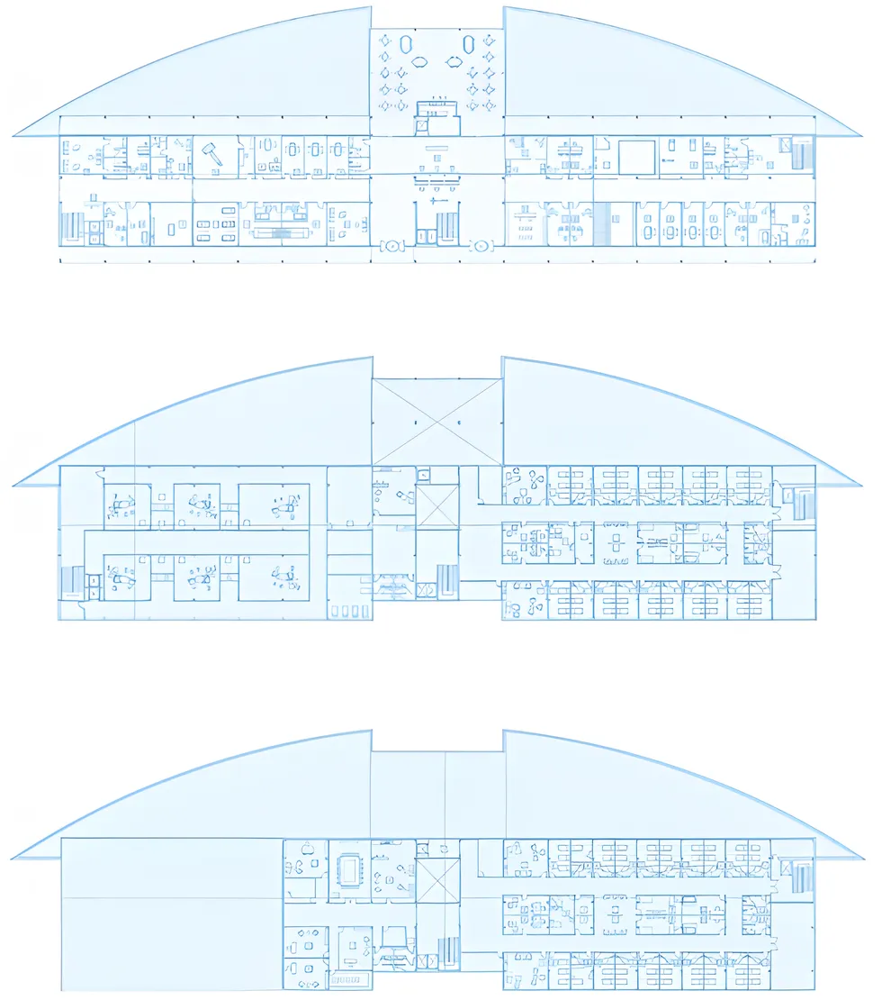
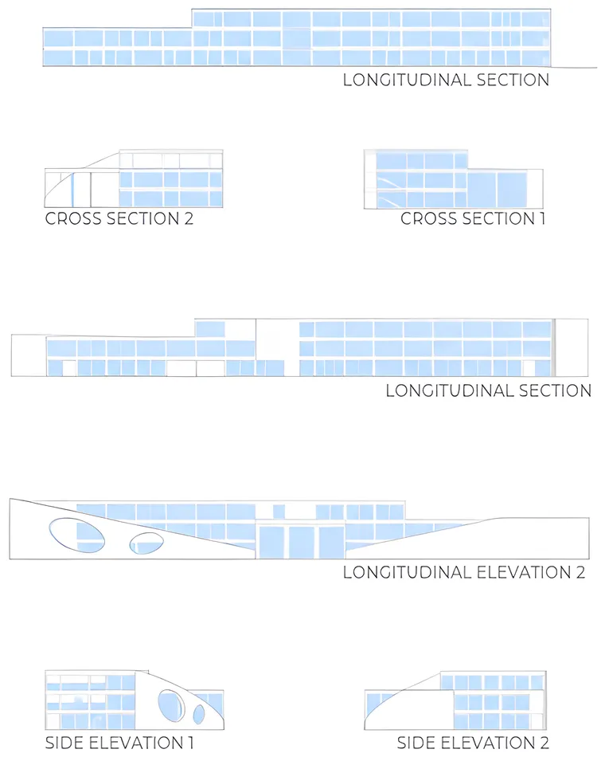
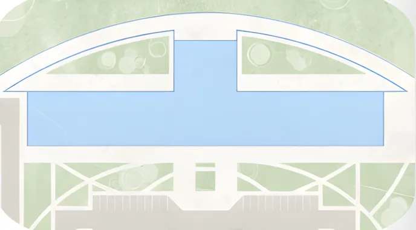

Health Center
A clinic behind a curved wall, with gardens and walkable plazas between the street and the door.

- Type
- Public healthcare
- Location
- Skopje
- Status
- Conceptual design
- Site
- 6,500 m²
A public health center that puts patients first. A curved outer wall, cut with large oval openings, wraps the building and shelters the entrance garden.
Behind it, light-filled wards and clinics sit around an atrium. Admissions and emergency are on the ground floor, cardiology and surgery above, and administration at the top.
Green courtyards and plazas connect the building to the streets around it, so arriving feels like walking through a garden.




